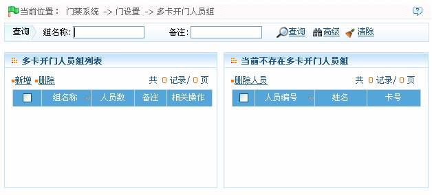
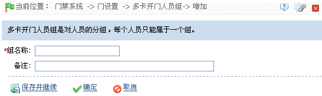
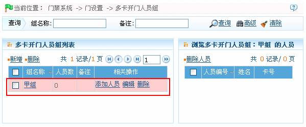
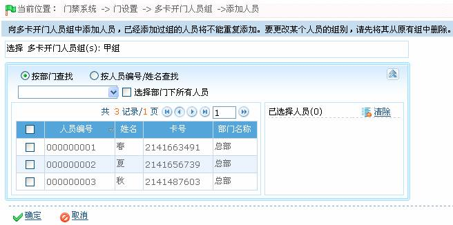
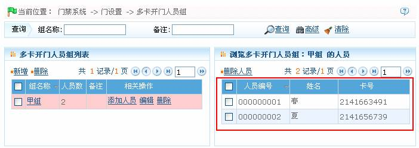

注意：设置多卡开门时，须先设置多卡开门人员组，并为其添加人员。
注意：设置多卡开门时，须先设置多卡开门人员组，并为其添加人员。
设置多卡开门人员组：多卡开门人员组是对人员的分组，该组将用于多卡开门组合的设置。
-
 新增----多卡开门人员组
新增----多卡开门人员组
（1）、单击【门禁】 【门设置】
【门设置】 【多卡开门人员组】，进入多卡开门人员组页面：
【多卡开门人员组】，进入多卡开门人员组页面：

（2）、单击【新增】按钮，进入新增多卡开门人员组页面：

组名称：输入组名称。（最多30个字符，不可与其他组名称重复。）
备注：根据需要输入备注信息。
 注意：多卡开门人员能组是对人员的分组，每个人员只能属于一个组。
注意：多卡开门人员能组是对人员的分组，每个人员只能属于一个组。
（2）、设置完成后，单击【确定】按钮，保存并返回多卡开门人员组页面，此时多卡开门人员组列表中将显示刚新增的多卡开门人员组：

-
为“多卡开门人员组”添加人员
（1）、在多卡开门人员组页面，单击多卡开门人员组列表的多卡开门人员组所在行的“相关操作”下对应的【添加人员】按钮，进入为多卡开门人员组添加开门人员页面：

（2）、选择人员（可多选）。注意：已经添加过组的人员将不能重复添加。要更改某个人员的组别，请先将其从原有组中删除。
（3）、单击【确定】按钮保存，并返回多卡开门人员组页面。单击多卡开门人员能组所在行，可在页面右边的列表中，浏览该多卡开门人员组的开门人员，如下图所示：

 注意：一个人员只能属于一个组，不能重复分组。
注意：一个人员只能属于一个组，不能重复分组。